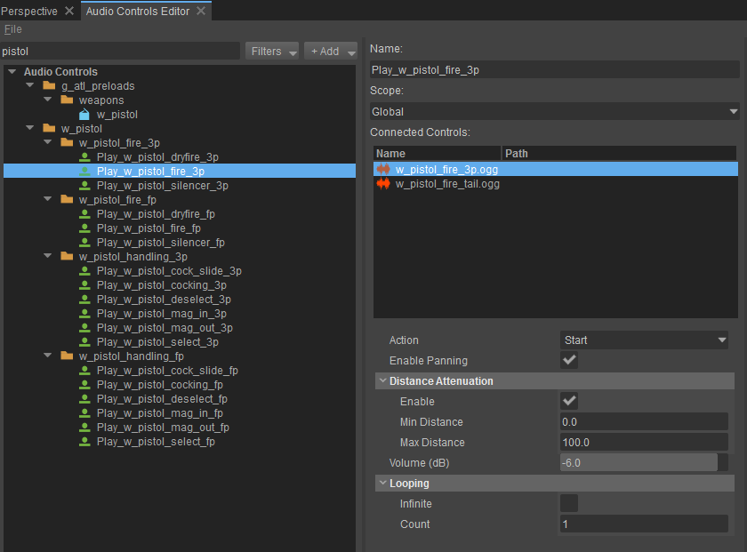
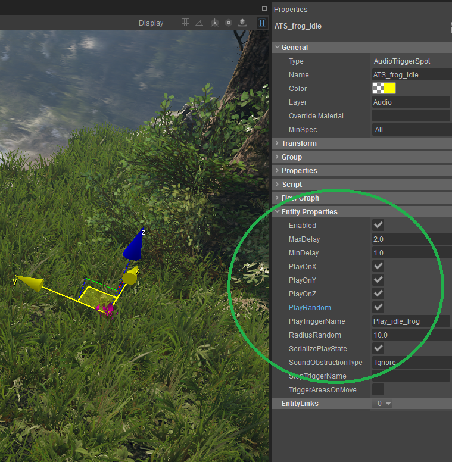

In This Topic
Setting up SpotFX in SDL-Mixer
Using the Audio Trigger Spot Entity
CRYENGINE uses the Audio Trigger Spot entity to execute audio system Triggers that emits sound from or around a given spot in a level. These sounds are called SpotFX. The SDL-Mixer has a basic set of options that are used to specify how the sound will be played back in CRYENGINE.
The Audio Trigger Spot entity is located in the Audio option under the Create Object tab. After you select the Audio Trigger Spot entity you can place it anywhere in a level.
For a detailed explanation on how to correctly setup the Audio Trigger Spot entity in your level, follow the instructions found on SDL Mixer Initial Setup.
Working with Attenuation
Using SDL-Mixer, you can enable a simple set of 3D properties for each sound connected to an audio system Trigger. You can access these options in the Properties panel when you select the connected audio file under the audio system Trigger.

The Enable Panning option positions the sound according to the angle between the listener and the sound's source.
The Enable Panning checkbox should always be enabled when placing a sound in a level so that the positioning of the sound source is possible.
You can enable the Distance Attenuation option which linearly attenuates the volume of the sound (depending on the distance values used). This option should be enabled when placing a sound in a level as a SpotFX for a proper roll off.
Use the Min Distance and Max Distance to define when the sound will start to attenuate and when it will be fully attenuated. For example, with a Min Distance of 10 and a Max Distance of 30 the sound will play on full volume during the first 10 meters from the sound source and then start to drop off in volume until it will be fully attenuated (silent) at a distance of 30 meters.
Randomizing Sound on the AudioTriggerSpot with SDL-Mixer
If you want to re-trigger a sound over a certain time frame then you can make use of the randomization feature of the Audio Trigger Spot entity. The following steps allow you to randomize the sound:
- Select the audio systemL Trigger and make sure that the connected audio files are not set to loop infinitely, and then enable both Enable Panning and Enable Distance.
- Randomized Re-triggering:
- In CRYENGINE, select the Audio Trigger Spot under Audio in the Create Object tab, and then enable PlayRandom in the Audio Trigger Spot Properties section.
- Set values for the MinDelay and MaxDelay to define the time range over which the audio system Trigger will be re-triggered.
- Randomized Positioning:
- In CRYENGINE, enable PlayOnX/PlayOnY/PlayOnZ in the Properties tab in order to enable on which axis of the Audio Trigger Spot the sound position can be randomized on.
- Set a value for RadiusRandom to define the range in which the sounds can be randomized.
This can be useful for adding more variation and interest to the soundscape in your level. For example, this can be used to simulate frog croaks which can be heard at different points in time and in different positions around the entity based on the random radius setting.
